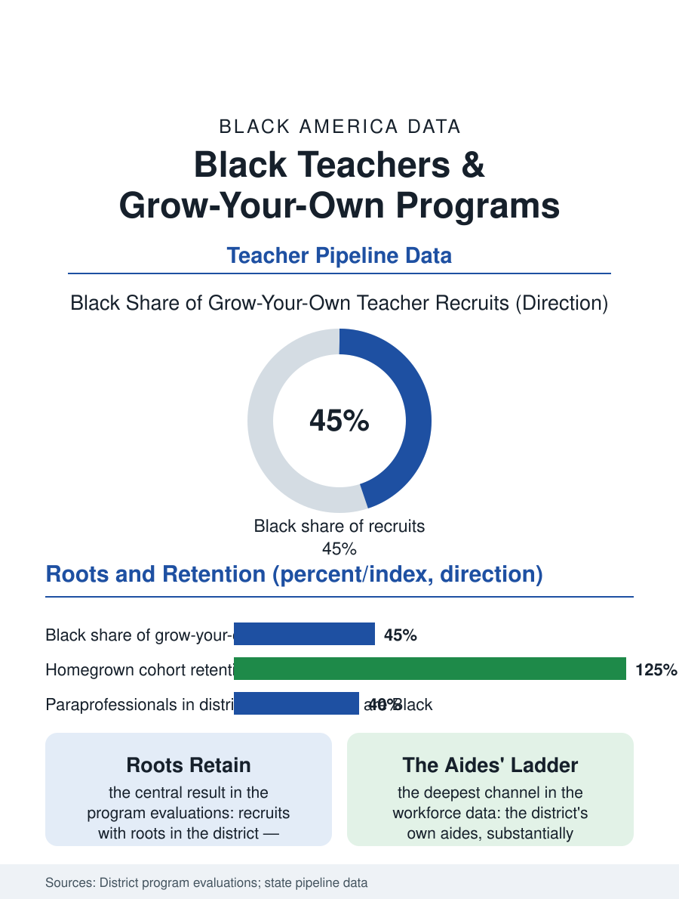

Black Education
Roots as a Technology: Grow-Your-Own Teacher Pipelines
The district that grows its own teachers recruits more Black and keeps them longer, on the theory that rootedness is instructional capital. The grow-your-own file.

The teacher pipeline's newest instrument is the grow-your-own program: the district that recruits its own paraprofessionals, parents, and high school students into teaching, on the theory that the teacher who is from the community stays in the community, and the data's early returns show the model's recruits are substantially more Black and more durable than the traditional pipeline's. This article reads the grow-your-own file.
The Retention Problem It Answers
The pipeline problem the model answers is stated in the workforce data: Black teachers enter at rates below the student population's need and leave at rates above the profession's average, the attrition concentrated in the first five years and in the high-poverty schools where the new Black teacher is most often placed, so that the system's Black faculty share is a leaky bucket the recruitment campaigns fill and the conditions drain. Grow-your-own attacks the drain's causes at the choosing stage: the recruit's roots, the family in the district, the rent known and the church known, convert the placement's hardships from discoveries into known quantities, and the early program evaluations record retention rates for the homegrown cohorts running ahead of the imported cohorts' in the same buildings, the file's central result. The paraprofessional pipeline is the model's deepest channel: the district's own instructional aides, a workforce substantially Black and female and experienced in its exact classrooms, hold the bachelor's credits and the community standing the traditional pipeline pays to simulate, and the barrier is purely credential arithmetic, the degree completion and the certification examinations while working the aide's schedule, which the programs' design, the evening cohorts, the tuition partnerships with the local university, the paid release time, exists to solve. The state's role in the model's spread is the funding formula's: the programs live on the braided money of the district, the university partnership, and the state pipeline grants whose competitions now score the homegrown design explicitly, so that the model's second generation is being built with the first generation's retention tables as its application evidence, a virtuous paperwork the field has not often enjoyed.
The High School Academies and the Cadets
The model's second channel reaches earlier: the teacher academies and cadet programs of the high school file recruit the district's own students, disproportionately Black in the districts that run them, into the education pathway with the dual enrollment credits and the classroom apprenticeships that let an eighteen-year-old test the profession's reality before the tuition commits, the programs' college matriculation into education majors running ahead of the baseline in the districts' tracking data. The financial design is the file's recurring hinge: the scholarship-for-service structures, the forgivable loans against the years taught in the district, convert the wealth file's barrier into the program's retention instrument, the graduate's debt retiring as the service accrues, in the pattern of the health professions' service scholarships whose evidence the programs cite. The alternative certification programs adjoin the model, their mid-career and community recruits posting the diversity the traditional programs do not, their retention problem the mirror image, the residency models that apprentice the recruit inside the district's own classrooms for a paid year being the design convergence the evaluations currently favor, grow-your-own's roots with the residency's preparation.
Roots as a Technology
The grow-your-own file closes on the model's claim about what a teacher is: the traditional pipeline treats preparation as portable, the credential valid anywhere, and accepts the mobility that portability produces, the teacher as a free agent in a national market the high-poverty district loses; the homegrown model treats rootedness as a professional asset in itself, the teacher's knowledge of the students' streets and grandmothers being instructional capital the imported credential cannot carry. The evidence's limits belong in the file: the programs are young, their cohorts small against the workforce's scale, and their test score effects unproven at the standard the evaluation literature demands, their retention and diversity effects being the established claims. The districts' adoption curve is the file's trend line, the model spreading from the urban pioneers into the rural districts whose pipelines failed first. The data systems count the teachers by their preparation route now. The file's last entry is the aide in the evening cohort, finishing the degree between the school day she worked and the one she will lead, in the building where she was once the student, which is the model's whole theory walking the hall it grew in.
More in Black Education
Black Educational Attainment: High School Parity, the College Gap
About 89 percent of Black adults hold a high school diploma and one in four holds a bachelor's degree or higher — the attainment ladder, the college completion gap, and the generational trend.
Historically Black Colleges and Universities: Enrollment and Degrees
More than 100 HBCUs enroll roughly 290,000 students and award about one in six Black bachelor's degrees — an outsized share from a small sector. The federal education data.
Black College Enrollment: 2.4 Million Students
About 2.4 million Black students are enrolled in American colleges — nearly two-thirds of them women. The NCES enrollment data by sector, level, and trend.
Source: State and district grow-your-own program evaluations; Learning Policy Institute teacher pipeline research.